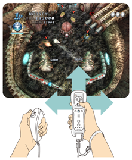
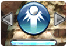

10 |
ルールとテクニック
|
 |
● フリッパー ● マルチボール ● エクストラボール
Wiiリモコンを素早く振ることで、盤面を揺らすことができます。これによりボールの軌道を少し変えることができます。
 揺らせるのは、左右と前の３方向です。ただし、揺らし過ぎると「TILT」という反則になり、そのボールがロストするまで、操作することができなくなります。
アクションボールとは、ボールが特殊な挙動や効果を発揮する技で、
ブーストボール
ボールを加速させ、敵に与えるダメージを強化します。  リバースボール リバースボールボールの動きを反転させて、逆方向にボールを運ぶことができます。  スプリットボール スプリットボールボールを２つに分身させます。分身したボールは時間で消失します。 ※ アクションボールは、重複して発動させることはできません。また、表示下部のゲージが満タンの状態でのみ、発動させることができます。 |
 |
 |
 |